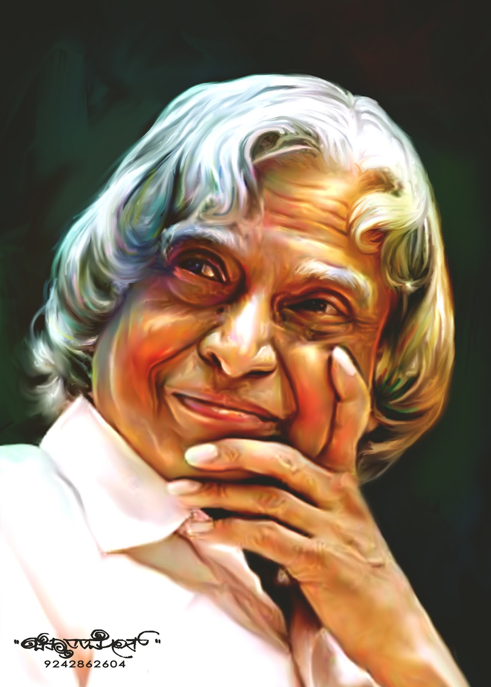

Dr A.P.J. Abdul Kalam
missile man of india . . . . !

(15 October 1931 to 27 July 2015 )
- NAME : Avul Pakir Jainulabdeen Abdul Kalam
(born October 15, 1931, Rameswaram, India—died July 27, 2015, Shillong) - Education: Madras Institute of Technology, Anna University (1955–1960), Kalam earned a degree in aeronautical engineering from the Madras Institute of Technology and in 1958 joined the Defence Research and Development Organisation (DRDO). He soon moved to the Indian Space Research Organisation, where he was project director of the SLV-III, India’s first indigenously designed and produced satellite launch vehicle. Rejoining DRDO in 1982, Kalam planned the program that produced a number of successful missiles, which helped earned him the nickname “Missile Man.”
- Indian scientist and politician who played a leading role in the development of India's missile and nuclear weapons programs. He was president of India from 2002 to 2007 From 1992 to 1997 Kalam was scientific adviser to the defense minister, and he later served as principal scientific adviser (1999–2001) to the government with the rank of cabinet minister. His prominent role in the country’s 1998 nuclear weapons tests established Kalam as a national hero, although the tests caused great concern in the international community. In 1998 Kalam put forward a countrywide plan called Technology Vision 2020, which he described as a road map for transforming India from a less-developed to a developed society in 20 years. The plan called for, among other measures, increasing agricultural productivity, emphasizing technology as a vehicle for economic growth, and widening access to health care and education.
- In 2002 India’s ruling National Democratic Alliance (NDA) put forward Kalam to succeed outgoing President Kocheril Raman Narayanan. Kalam was nominated by the Hindu nationalist (Hindutva) NDA even though he was Muslim, and his stature and popular appeal were such that even the main opposition party, the Indian National Congress, also proposed his candidacy.